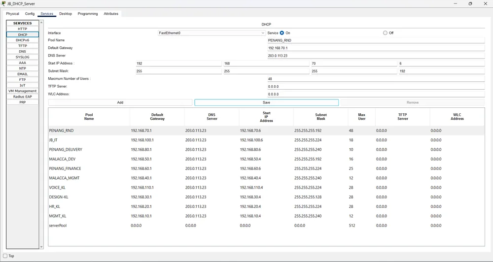
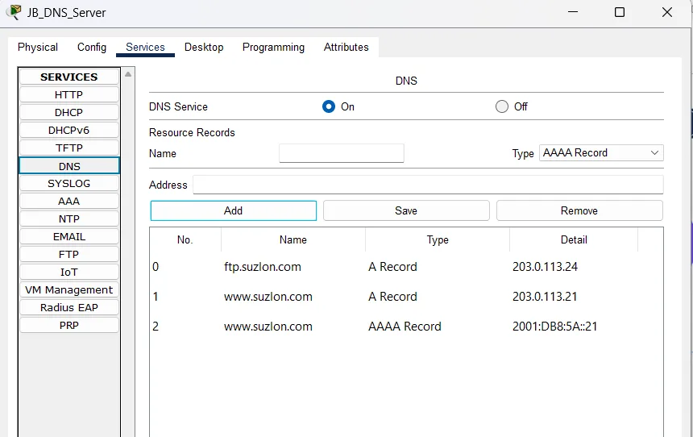

In a small lab it is normal to put a DHCP server in every subnet. In my four-site assignment that would have meant ten servers. Instead there was one server farm with a single DHCP server and a single DNS server, and every VLAN used them across the network. This article explains how that works in Packet Tracer and how to plan the address pools so they do not collide with your gateways.
How one server can serve many VLANs
DHCP discovery is a broadcast, and broadcasts do not cross routers. The fix is a relay: on each VLAN interface of the gateway, ip helper-address tells the router to forward DHCP requests to the real server as unicast. The server then looks at the address of the interface that relayed the request and chooses the pool that matches that subnet.
interface vlan 20
ip address 192.168.20.2 255.255.255.224
ip helper-address 203.0.113.22In my network the DHCP server was at 203.0.113.22 and the DNS server at 203.0.113.23, in the server farm at Johor Bahru.
One pool per VLAN
The server needs one pool for every subnet it serves, each with a gateway, a DNS server, a start address and a mask. I configured ten pools in the server's Services tab, covering the HQ, Malacca, Penang and JB VLANs.

Why the start addresses are not .1
Look at the start address column. The HQ pools start at .4 and the Penang and JB ones at .6, not .1. That is deliberate. In every subnet the first addresses are taken: .1 is the HSRP virtual gateway, and the real gateways take the next addresses (in my HQ core, .2 and .3). If DHCP handed out .1 to a laptop, you would get an address conflict with the gateway and a very confusing outage. At Penang and JB I left a little more room, starting at .6, for the extra gateway addresses there. Decide your static addresses first, then start the pool after them.
IPv6: stateless DHCPv6
For IPv6, the HQ gateways advertise the "other config" flag. Hosts build their address themselves with SLAAC and ask DHCPv6 only for extra information, such as the DNS server and domain name. That is "stateless" DHCPv6: the server does not track addresses.
The DNS server
For names I enabled the DNS service on the server and added resource records. www points to the web server's address and ftp to the FTP server's address. Each also has an IPv6 (AAAA) record, because the network is dual-stack.

To test the whole chain, I opened a browser on a PC in another VLAN and went to the web server by name instead of IP. That one test proves DHCP gave the PC a DNS address, the DNS server answered, and routing reached the server farm.
The router-based alternative
You can also run DHCP on the router itself, which is common in small offices. There you reserve addresses with ip dhcp excluded-address before creating the pool, so the gateway addresses are never handed out. The principle is the same as choosing a higher start address on a server: keep your static and gateway addresses out of the pool. A dedicated server scales better once you have several sites, which is why I used one in the server farm.
What to check when a PC gets no address
- Is
ip helper-addressconfigured on the PC's own gateway interface? That is the most frequent miss. - Does the DHCP server have a pool whose network matches the VLAN's subnet?
- Can the gateway ping the DHCP server? Relay does not fix routing.
- Is DHCP snooping on the access switch trusting the uplink? On a snooping-enabled switch an untrusted uplink silently drops the server's replies (see Cisco Port Security Basics).
If you want to see how the same idea looks on a real server instead of Packet Tracer, my BIND9 on Rocky Linux article covers a DNS server with forward and reverse zones.